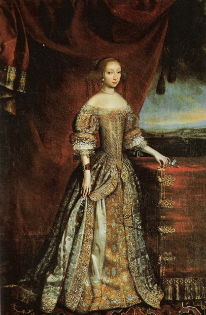

В это время мода в Англии была неустойчивой и стремительно менялась. К середине XVII века в ней начали всё сильнее и сильнее проявляться французские тенденции, но и характерный английский колорит не исчез бесследно.

Основное отличие женских костюмов во Франции и Англии заключалось в том, что в Англии дамы предпочитали больше закрытых деталей: рукав был три четверти, a юбки длиннее и слегка были собраны книзу. Шили, как правило, из атласной ткани, а корсет придавал лифу изящные формы, которые были так актуальны среди женщин того времени. Все платье было обточено кружевом.
Шпага, обязательный элемент дворянского костюма, крепилась с левой стороны, на перевязи, с помощью парчи или ремешка.
Также немаловажными аксессуарами были трость и перчатки.
К концу XVII века сложились три важных компонента мужского костюма – сюртук, жилет и брюки.